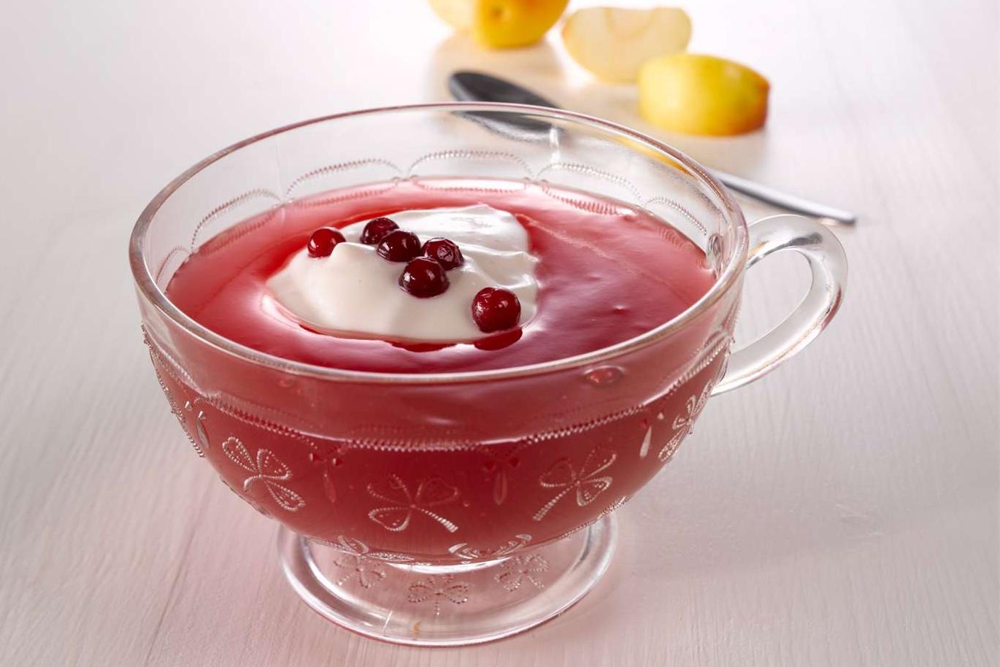

VÄLIPALA IDEOITA:
SÄMPYLÄT:

AINEKSET:
- 2,5 dl vettä tai maitoa
- 25 g hiiva (1 pussi)
- 1 tl sokeria
- 0,5 tl suolaa
- noin 6 dl sämpylä- tai hiivaleipäjauhoja
- 2 rkl öljyä
VINKKI:
- Porkkanasämpylät: lisää taikinaan 1-2 dl porkkanaraastetta.
OHJEET:
- Lämmitä neste kädenlämpöiseksi.
- Murenna ja liota hiiva nesteeseen, lisää sokeri ja suola ja sekoita. Lisää yli puolet jauhoista haarukkavatkaimella sekoittaen.
- Lisää jauhoja vähitellen ja alusta taikinaa vain toisella kädellä.
- Lisää lopuksi öljy ja alusta, kunnes taikina irtoaa kulhon reunoista ja kädestä.
- Peitä kulho leivinliinalla ja kohota taikina kaksinkertaiseksi lämpimässä paikassa.
- Vaivaa kohonnut taikina jauhotetulla leivinpöydällä. Muotoile taikina tangoksi ja jaa se 12 osaan. Muovista leipurinlastaa tai kaavinta käyttämällä et naarmuta pöytää.
- Leivo taikinapalat sämpylöiksi ja aseta ne pellille leivinpaperille tasaisin välein. Pane uuni kuumenemaan 225 °C:seen.
- Peitä sämpylät leivinliinalla ja kohota. Sämpylät ovat paistovalmiita, kun ne tuntuvat pehmeiltä ja niihin jää kuoppa sormella painettaessa. Jos haluat sämpylöistä rapeakuorisia, älä peitä niitä leivinliinalla kohottamisen aikana äläkä myöskään uunista ottamisen jälkeen.
- Paista sämpylöitä uunin keskitasossa noin 10 minuuttia.
TEELEIPÄ

AINEKSET:
- 2 dl jauhoja
- 1 tl leivinjauhetta
- 1/4 tl suolaa
- 1 dl vettä tai maitoa
- 1 rkl öljyä
- (mausteita)
OHJEET:
- Pane uuni kuumenemaan 225 °C:seen.
- Sekoita kuivat aineet kulhossa.
- Lisää kylmä neste ja öljy.
- Sekoita taikina tasaiseksi, mutta sekoita kuitenkin mahdollisimman vähän.
- Jaa taikina pellille leivinpaperin päälle kahteen osaan. Taputtele jauhotetuilla käsillä pyöreiksi, noin senttimetrin paksuisiksi leiviksi. Voit valmistaa taikinasta myös vain yhden teeleivän.
- Jaa leivät taikinapyörällä neljään osaan ja pistele haarukalla.
- Paista heti uunin keskitasossa 10-15 minuuttia.
VINKKI:
- Porkkanateeleivät: lisää taikinaan 1 dl porkkanaraastetta.
- Juustoteeleivät: lisää taikinaan 1 dl juustoraastetta.
- Yrttiteeleivät: lisää taikinaan 1 rkl tuoreita, hienonnettuja yrttejä tai 1 tl kuivattuja yrttejä.
- Pinaattiteeleivät: lisää taikinaan vähän pakastepinaattia.
MARJAKIISSELI:

AINEKSET:
- 5 dl laimennettua mehua
- 2 1/2 rkl perunajauhoja
- Halutessasi voit lisätä vielä 2-3 dl marjoja.
- (sokeria)
OHJEET:
- Mittaa kattilaan sopivaksi laimennettu kylmä mehu.
- Lisää perunajauhot ja sekoita.
- Kuumenna koko ajan haarukkavatkaimella sekoittaen, kunnes seos kiehuu.
- Nosta kattila pois liedeltä ja lisää marjat. Jäiset pakastemarjat jäähdyttävät kiisselin.
- Tarkista maku. Lisää tarvittaessa sokeria. Kaada kiisseli tarjoiluastiaan. Ripottele vähän sokeria pinnalle kuortumisen estämiseksi.
VINKKI:
- Kiisselistä saa hauskaa hyytelöä lisäämällä enemmän perunajauhoja! Tällöin mehusta kannattaa tehdä vahvempaa, jotta perunajauhon maku peittyy paremmin.